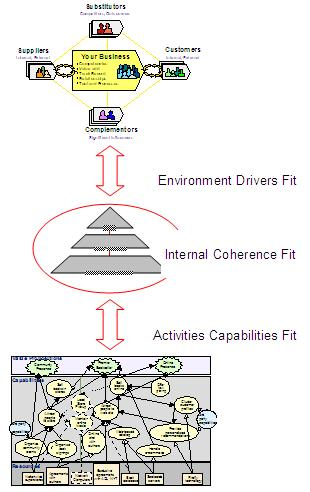

| Artifact: Strategic Fit Assessment
(BUS 324)
|
|
 |
| The Strategic Fit Assessment work product documents a series of analyses required to determine alignment and completeness of the current and/or future business strategy. The work product documents and qualifies the relationship between the components, drivers and enablers of the strategy. |
Domains: Business Strategy
Work Product Kinds: Assessment |
|
Purpose
The primary purpose of the Strategic Fit Assessment is to VERIFY and qualify the newly developed business strategy or
initiative(s) from the perspective of relationships (fit, or lack of it) between the Business Strategy and the external
and internal factors; between Business Strategy building blocks or/and between the initiative(s) and the enterprise
strategy.
The secondary purpose of performing this work product is to gain a common awareness and good understanding of the
client's business strategies in a more comprehensive manner than provided by the Strategic Direction work product.
On the business strategy development engagements the purpose of this work product is to ensure/validate that the
proposed business strategy addresses the external and internal factors in the most appropriate and efficient way, as
well as that it is internally cohesive.
On the business transformation, process change, ERP project the purpose of this work product is to determine the fit
between the enterprise strategy and the proposed strategic initiative(s). These initiatives are usually identified with
the IBM assistance during the engagement.
Increasingly, IBM consultants may be asked to validate or assess a business strategy fit in the context of
"e-business". The analysis is then focused on answering the following questions: Does the strategy adequately address
the challenges and opportunities represented by e-business? Is the client being aggressive enough in considering value
system implications of e-business? How does the client's e-business strategy compare to competitors'?
In conclusion, this work product is developed to verify alignment of the business strategy and/or identify alignment
opportunities for the client's business strategies with their stated goals, desired market position, customer’s wants
and needs, value propositions, strategic initiatives and enterprise capabilities, as well as to broaden understanding
of the client’s business strategies.
|
Relationships
Description
| Main Description |
This work product determines fit between the components or the lack of it and attempts to assess the severity of
misalignment.
On engagements focused on Business Strategy development the scope of the Strategic Fit Assessment work product
addresses the alignment and effectiveness of the business strategy components in the three major areas:

-
RELATIONSHIP with EXTERNAL FACTORS. Alignment between Business Strategy and factors external to the enterprise such
as:
-
-
Business environment and drivers
-
Customers’ wants and needs
-
Strategic market positions, competitive pressures
-
Position in the Value Creation Chain
-
RELATIONSHIP with INTERNAL FACTORS. Alignment between Business Strategy and Strategy and factors internal to the
enterprise such as:
-
Resources available or required to execute the strategy
-
Capabilities of the organization to utilize the resources in execution of the strategy
-
Management preferences influencing ability to lead the strategy execution
-
INTERNAL COHERENCE of the Business Strategy. Congruence and alignment between internal building blocks of the
business strategy, such as:
-
-
Vision
-
Mission
-
Goals
-
Critical Success Factors
On engagements focused on development of strategic initiatives supporting an already defined business strategy the
scope of the Strategic Fit Assessment work product addresses the compatibility of the initiative(s) and the enterprise
strategy.
The extent and depth of the analysis performed during development of this work product vary and depends on the purpose
of the engagement and the client requirements.
The output of the Strategic Fit Assessment can be a presentation and report, comprised of both text and graphics, which
contains contents such as any or all of the following:
-
An updated or validated statement of the client's Strategic Direction (Vision, Mission, Goals & Objectives,
Critical Success Factors)
-
A depiction of Strategic Market Positions (products, customer, access): Current ("As-Is") and Desired ("To-Be")
-
A depiction of Capability Positions of the client's key business processes: Current ("As-Is") and Desired
("To-Be"). Note: business process capability includes all enablers of a process such as those related to people
, knowledge and technology
-
A depiction of the implication of e-business on the client’s competitive arena
-
A summary list of misaligned Strategic Market Positions and Capability Positions (i.e. summary of capability gaps)
-
A decomposition of the client's vision statement (if available) and an identification of missing or misaligned
elements of a "grounded vision"
-
A graphical depiction of the recommended "transformation path" which identifies the steps or phases necessary to
achieve the capabilities necessary to effectively execute positioning strategies in support of the client's vision
-
A consolidation of the above content into an executive report and/or presentation
-
Usage of matrices such as Business Drivers to Goals, Goals to Market Positions, Goals to CSFs, Goals to
Capabilities, Capabilities to Capability Enablers, Goals to Projects / Initiatives etc.
|
| Brief Outline |
This work product should produce a presentation and report, comprised of both text and graphics, which addresses the
following areas:
-
An updated or validated statement of the client's Strategic Direction (Vision, Mission, Goals & Objectives,
Critical Success Factors), which addresses clarity, coherence and mutual reinforcement of the components. The
relationships between the components are depicted in a dependency diagram, which visualize hierarchy, links and
strength of the support/influence relationship. Various arrow connections indicate various strength and relevance
of the dependencies.
-
An assessment of how the business strategy is addressing the external drivers of the business environment and
desired strategic market positions (products, customer, access). The dependency diagram is used to depict how the
strategic goals and objectives influence achievement of the desired market position. Also, a gap analysis graph can
be used to visualize the gap between current ("As-Is") and desired ("To-Be") position.
-
An assessment of how the desired or current enterprise capabilities are supporting achievement of the business
strategy. The analysis is reaching beyond the capabilities level into the base elements contributing towards these
capabilities such as: processes, organization, human, financial, material and information resources as well as
enabling infrastructure. The analysis may include intangible elements such as management preferences and corporate
culture. The dependency diagrams and the gap graphs can be used to visualize the findings.
-
The work product analysis should include the implication of e-business on the client’s competitive arena.
-
A decomposition of the client's vision statement (if available) and an identification of missing or mis-aligned
elements of a "grounded vision".
-
A graphical depiction of the recommended "transformation path" which identifies the steps or phases necessary to
achieve the capabilities necessary to effectively execute positioning strategies in support of the client's vision.
-
Usage of matrices such as Business Drivers to Goals, Goals to Market Positions, Goals to CSFs, Goals to
Capabilities, Capabilities to Capability Enablers, Goals to Projects / Initiatives etc, to support the Fit analysis
conclusions.
-
This work product requires an executive summary to consolidate the analysis and summarize findings i.e.: all
identified misalignments are to be recap in the executive summary in the bullet form.
|
Illustrations
Key Considerations
Developing this work product use the following matrices wherever appropriate: Business Drivers to Goals, Goals to
Market Positions, Goals to CSFs, Goals to Capabilities, Capabilities to Capability Enablers, Goals to Projects /
Initiatives etc.
Validation and verification is conducted by reviewing the interpretation of the strategic direction of the firm (i.e.,
mission, vision, CSF's, etc.), and all key findings relative to product/service/access and capability positioning and,
as well as the identified gaps and high level recommendations to close them with the client sponsor and appropriate
senior executives and the client's key managers.
It is critical to hold a peer/quality assurance review and share the deliverables with the consulting team so everyone
knows what the client's strategic business direction is and which capabilities must be built/enhanced since this work
product sets the stage for initiative identification, justification and prioritization.
The client's key individuals who were not able to participate in development of this work product has to be included in
the validation process by either one-on-one meetings or a group status update meeting to review and discuss the output
of the work product.
|
Tailoring
| Impact of not having |
The impacts of not developing this work product may be:
-
The project may not address important strategic opportunities or develop strategic capabilities because the
client's business strategies are not commonly known or integrated into the project scope and objectives
-
The project may "pave the path" by further embedding current procedures and cultures that are, in fact,
counter-strategic
-
The opportunity for IBM to provide valuable insights relative to the alignment or misalignment of the client's
vision, goals, strategies and initiatives will be lost
-
Without this comprehensive analysis of the client's business strategy in the context of e-business we may lose an
opportunity to assist them in articulation and implementation of the e-business initiatives
|
| Reasons for not needing |
Although this work product can deliver significant value, it may not be necessary in the following situations:
-
The client has recently performed an equivalent analysis (with or without IBM's involvement) and is willing and
able to share the results. In this case it will still be important to communicate the client's strategies and
alignment issues to the entire transformation project team to ensure common awareness
-
The project is primarily focused on tactical issues and/or operational improvements and the client has little, if
any, desire or tolerance for considering a broader strategic landscape
-
The client has chosen to implement the initiative(s) with a pre-defined configuration or "template" and will accept
whatever results this will deliver.
|
More Information
| Guidelines |
|
| Supporting Materials |
|
| Estimation Considerations |
|
© Copyright IBM Corp. 1987, 2012 All Rights Reserved
Property of IBM
These materials are intended only for use as part of an IBM engagement |
|